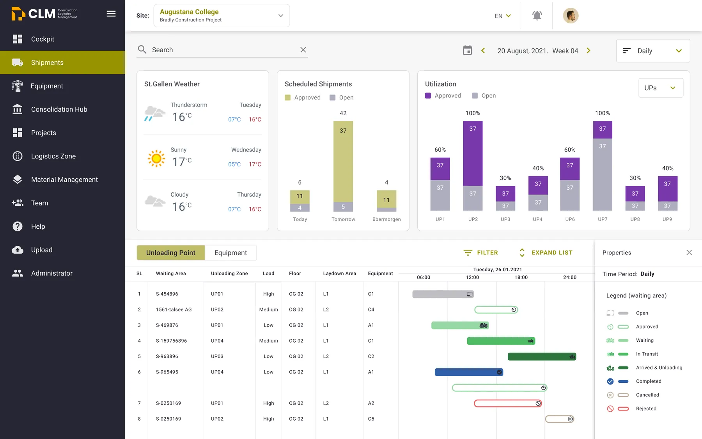
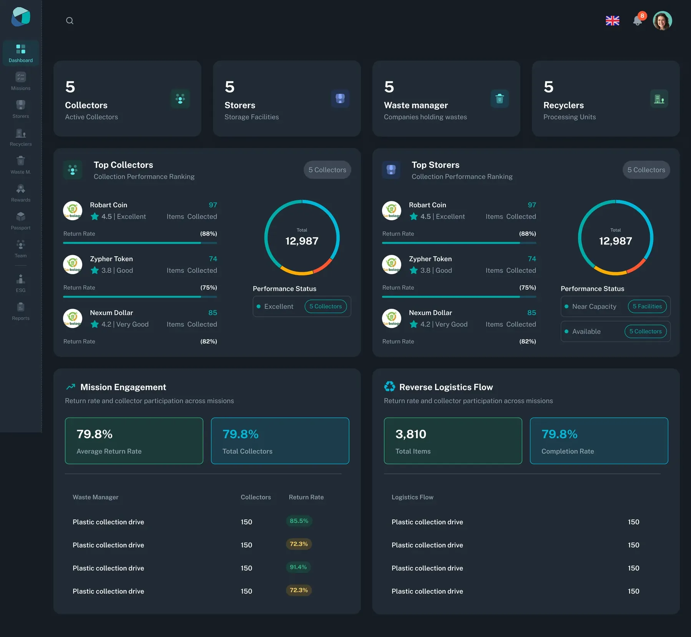
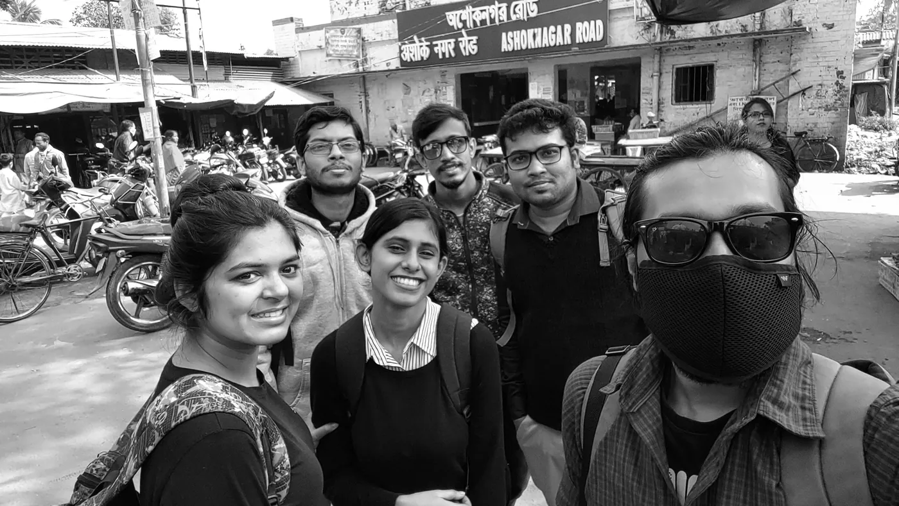
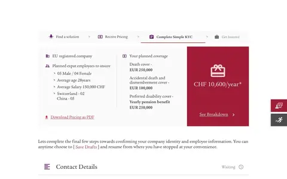
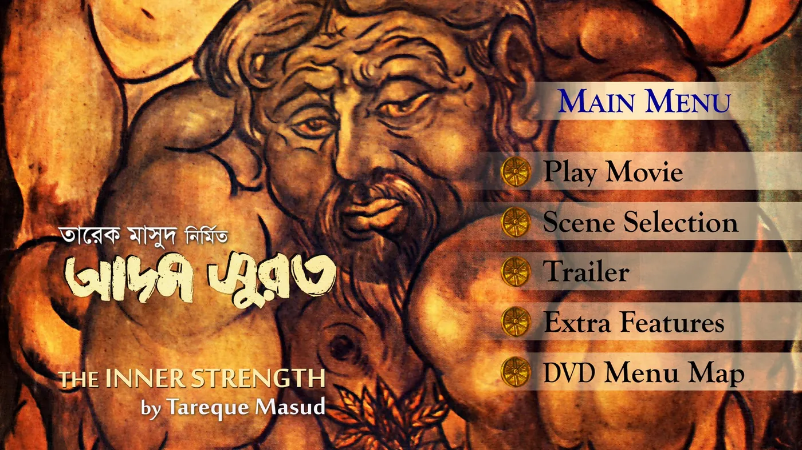
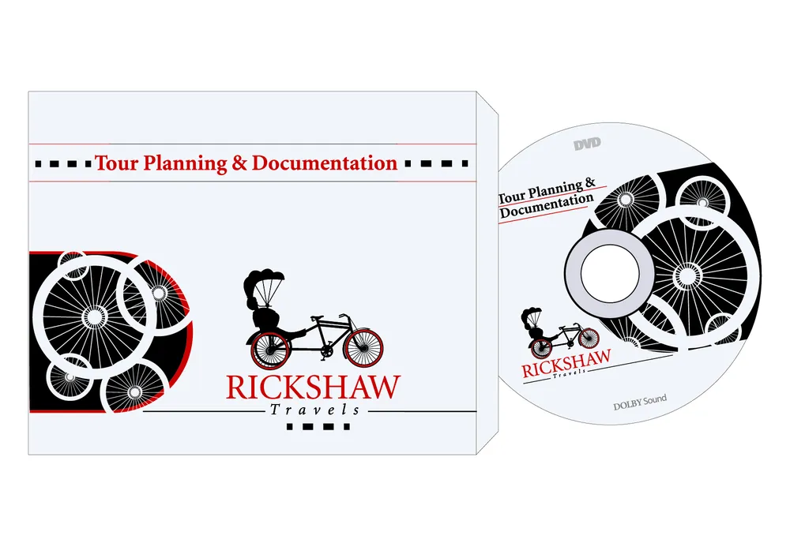
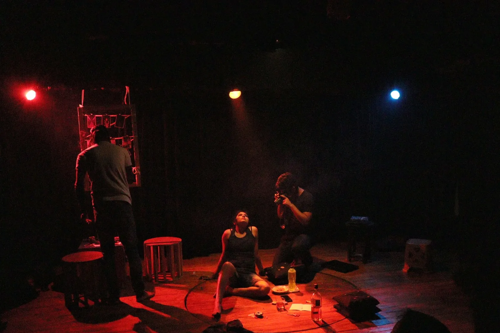

The story · 4 earlier frames
Clermont-Ferrand, France · open to roles and projects across Europe
I design complex products, and build them with AI.
Design Engineer and UX lead. For ten years I have turned complicated operations in logistics, finance and energy into products people can use without a manual. I lead the UX from research to design system, then build working prototypes with AI, so a team can test an idea before committing to it.
- 10 yrs
- in product and UX design, from intern to unit lead
- 5
- connected products led as one ecosystem: 3 web apps, 2 mobile apps
- 8 h
- from a client brief to two working portal prototypes
- 2
- degrees: graphic design, then mass communication and film
My work
-
01

One ecosystem, from plan to move-inFive products for the whole life of a building: LIM plans the site, CLM runs its logistics every day, MoveIt moves people in. -
02

Designing a habit, not an appA one-line brief became a five-role recycling product that people come back to: missions, handovers and rewards. -
03
 From pitch to clickable product in 8 hoursA power-utility brief turned into two working portal prototypes in one day, so the client could try the proposal instead of imagining it.
From pitch to clickable product in 8 hoursA power-utility brief turned into two working portal prototypes in one day, so the client could try the proposal instead of imagining it.
-
2019 – 21

Kolkata, through a lensA Master's in film on an ICCR scholarship, and two documentaries. A camera taught me to cut. -
2016 – 19

Many screens, one languageIntern to UX Engineer at SELISE: insurance, finance, telecom and IoT products. -
2013

Adam Surat: my first interfaceDVD menus for Tareque Masud's film, designed before I knew to call them interfaces. - Childhood A village windowNarikelbari, Bangladesh. Before I knew anything about design, I knew how to look.
For teams and clients
What I bring to a product.
- 01
Product thinking
Understanding complex problems, users, business requirements and product opportunities.
- 02
UX leadership
Guiding designers, facilitating collaboration and keeping quality consistent across products.
- 03
Systems thinking
Connected workflows, reusable components and enterprise interfaces that scale.
- 04
Design engineering
Prototyping, front-end exploration and AI-assisted development that bring a design closer to shipped.
Built with AI
AI speeds it up. Judgment sets the direction.
I use AI to shorten the distance between understanding a problem and testing a solution. This website is one of those experiments.
Case study 03 · Power utility
8 hours
GridOps: from proposal to working prototype
Two working portals from one brief, built with AI-assisted research, design and development.
Manufacturing
1 → 5
The prototype became the spec
A one-paragraph brief became five working modules that exposed the decisions the brief had left open.
CLM
30 min
One trustworthy screen
A single reference for logistics KPIs: definitions, formulas, data sources and reconciliation rules.
- Figma · Design · Make · FigJam
- Claude
- Google Stitch
- ChatGPT
- GitHub
- VS Code
- Storybook
The other frames · Film, photo, print, pencil
Before screens, I framed everything else.
Documentaries, photography, brand identities and drawings. This is where my eye for composition, pacing and editing comes from.

Documentaries
Boroline · TheatreSpaceAdam Surat
Photography
52 frames
Graphic design
6 identity sets
Videography
Music videos · motion
Drawings
Pencil first2019 – 2021 · Kolkata, India
Master's, Mass Communication and Videography
Rabindra Bharati University. ICCR scholarship, graduated A+, two documentaries.
2012 – 2016 · Dhaka, Bangladesh
BA (Hons), Graphic Design & Multimedia
Shanto-Mariam University of Creative Technology. Typography, branding, motion and copywriting.
Contact me
Let's frame
what's next.
A complex product problem, an idea worth exploring, or a team that wants design and engineering closer together. I'm open to roles and projects across Europe.